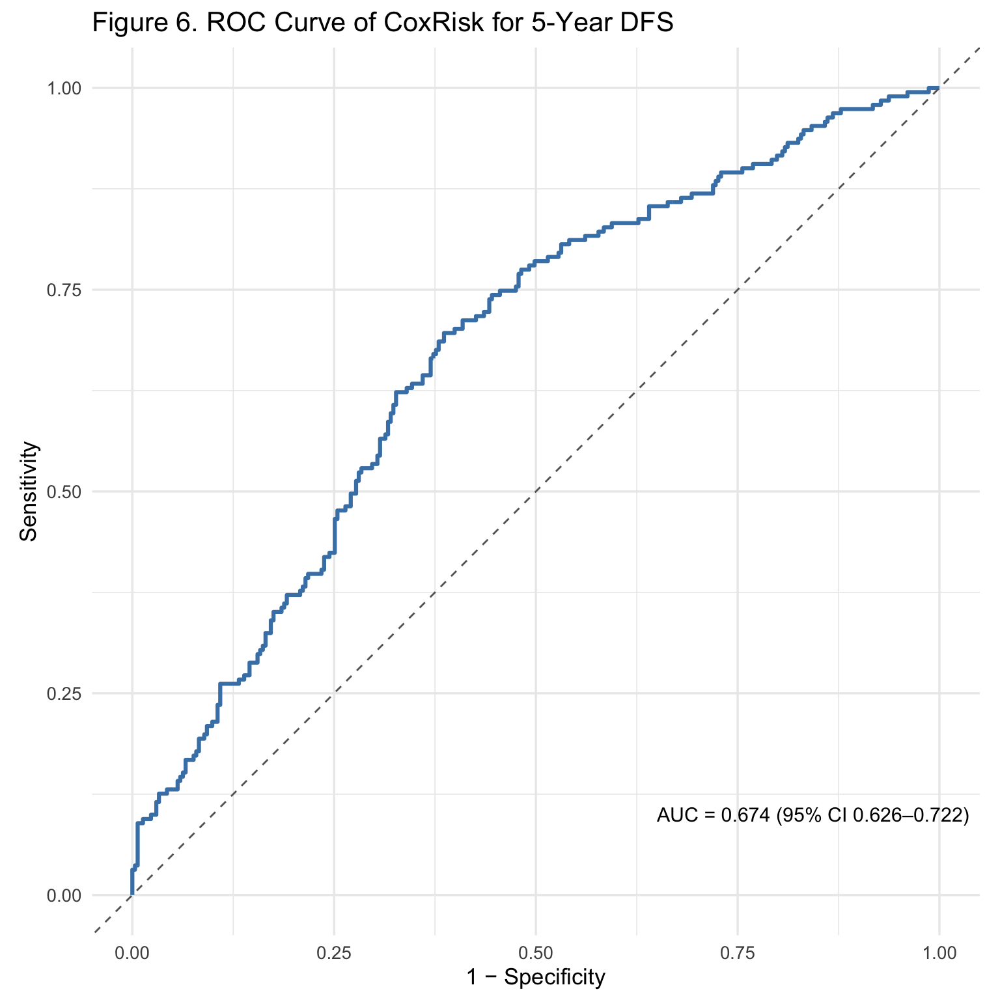

| Variable | N | Alive N = 2951 |
Dead N = 1991 |
Overall N = 4941 |
p-value2 |
|---|---|---|---|---|---|
| Age at Diagnosis (years) | 494 | 64.4 (9.9) | 65.3 (9.7) | 64.7 (9.8) | 0.45 |
| Chemotherapy Status | 494 | 192 (65%) | 113 (57%) | 305 (62%) | 0.063 |
| BMI Category | 494 | 0.56 | |||
| Normal | 104 (35%) | 68 (34%) | 172 (35%) | ||
| Obese | 79 (27%) | 47 (24%) | 126 (26%) | ||
| Overweight | 96 (33%) | 76 (38%) | 172 (35%) | ||
| Underweight | 16 (5.4%) | 8 (4.0%) | 24 (4.9%) | ||
| Diagnosis Group | 494 | 0.77 | |||
| 2012 or Later | 186 (63%) | 128 (64%) | 314 (64%) | ||
| Before 2012 | 109 (37%) | 71 (36%) | 180 (36%) | ||
| CoxRisk Group | 494 | <0.001 | |||
| High risk | 117 (40%) | 130 (65%) | 247 (50%) | ||
| Low risk | 178 (60%) | 69 (35%) | 247 (50%) | ||
| 1 Mean (SD); n (%) | |||||
| 2 Wilcoxon rank sum test; Pearson’s Chi-squared test | |||||
Evaluation of a Cox‑Based Composite as an In‑Vitro Diagnostic for 5‑Year Disease‑Free Survival in Breast Cancer: A Survival & IVD Study
Introduction
This project demonstrates how survival modeling techniques can be applied to evaluate the performance of a composite In-Vitro Diagnostic (IVD) test for breast cancer prognosis. Using a simulated cohort of 494 patients, we assess how clinical covariates and biomarker measurements contribute to the prediction of 5-year disease-free survival. The analysis highlights key aspects of diagnostic validation, including discrimination, calibration, probability accuracy, and precision. In addition to evaluating the Cox-based composite score (CoxRisk) as both a continuous and dichotomized test, we illustrate how analytical reproducibility can be incorporated into model assessment. The goal is to provide a reproducible framework that captures the full pipeline of prognostic evaluation, from simulation and model building to performance assessment and quality control.
The rationale for this work is to provide an end-to-end pipeline that mirrors the workflow of a real-world IVD validation study in oncology. While the dataset is simulated, the structure reflects the complexities of actual biomarker studies: pre-analytical variability, measurement error, missingness, survival outcomes, and the need for reproducible model evaluation. By constructing a Cox-based composite risk index and evaluating it with complementary metrics—discrimination, calibration, diagnostic accuracy, and laboratory precision—this project showcases how statistical programming, survival modeling, and reproducibility practices can be integrated into a rigorous, publication-ready report. The approach emphasizes clarity, interpretability, and methodological breadth, serving both as a portfolio artifact and as a teaching template for IVD-style prognostic modeling.
Methods
Study Design and Cohort
We conducted a retrospective simulation-based analysis of 494 breast cancer patients. The analytic dataset (see Data Preparation) included demographic, clinical, and biomarker variables aligned for prognostic modeling.
Data Preparation
This analysis utilized a simulated dataset designed to replicate the key features of a real-world study evaluating a Cox-based composite score as an In-Vitro Diagnostic (IVD) test for predicting 5-year disease-free survival in breast cancer. The simulation was engineered to reflect biological plausibility, pre-analytical variability, analytical measurement noise, and missing data patterns typical of biomarker studies. The primary goal was to create a robust platform for evaluating the diagnostic performance of the composite score (CoxRisk) while controlling the overall 5-year event rate at a target of 40%.
The simulation was constructed in the R statistical environment (version 4.3.2) using a multi-step process, as detailed below.
Study Design and Covariate Generation
A cohort of n = 494 hypothetical breast cancer patients was generated. This sample size provides sufficient statistical power for subsequent survival and diagnostic accuracy analyses while remaining computationally efficient.
Clinical Covariates: A base dataset was created containing patient-level clinical and demographic variables known to influence prognosis.
Agewas simulated from a normal distribution (mean = 65, sd = 10) and categorized into groups (<70,≥70).Chemotherapystatus was assigned (“Yes”/“No”) with a 60% prevalence.BMI_catwas generated from categories (“Underweight”, “Normal”, “Overweight”, “Obese”) with prespecified probabilities.Diag_year(2005-2021) was simulated and later categorized to reflect potential era-based treatment differences.
IVD Meta-Data: To mirror a multi-site IVD validation study, pre-analytical and analytical batch variables were created for each sample.
Site, Lot, and Operator: Each sample was assigned to one of three
Sites, threeLots, and sixOperators to introduce batch effects.Sample Quality Metrics: Realistic pre-analytical variables were included:
Matrix(Serum/Plasma)Collection_to_Freeze_hrsStorage_daysFreezeThaw_cyclesHemolysis_index
These variables were later used to model pre-analytical degradation and missingness.
Biomarker Simulation: Biology and Measurement
Three correlated latent biomarkers (A, B, C) were simulated to represent the underlying biology of aggressive disease.
True Biological Signals: Latent variables (
Z_A, Z_B, Z_C) were drawn from a multivariate normal distribution with a predefined correlation matrix (correlations ~0.3-0.4), reflecting the biological interplay between pathways.Scaling to Assay Range: The latent variables were transformed via a logit-based scaling function to produce
Truebiomarker concentrations within plausible, assay-specific ranges (A: 0.2-12, B: 0.1-8, C: 0.5-10 units). This preserved the rank order of values while constraining them to a realistic scale.Introduction of Measurement Variability: The measured values were derived from the true values by introducing several sources of variability:
Batch Effects: Systematic shifts (
sfx,lfx,ofx) were added based on the sample’s assigned Site, Lot, and Operator.Pre-Analytical Degradation: A composite
total_pre_fxvariable was calculated as a linear combination of the sample quality metrics (e.g., hemolysis, storage time), acting as a small multiplicative degradation factor.Random Analytical Noise: Independent, normally distributed random error was added to each marker, with assay-specific variances.
Limit of Detection (LoD) Handling: To mimic real-world assay limitations, values below a predefined assay-specific LoD were imputed using the common approximation
LoD / √2.
Survival Time Generation with Prevalence Tuning
A critical aspect of the simulation was to ensure the 5-year event rate converged to a specified target prevalence of 40%, making the dataset suitable for diagnostic accuracy evaluation.
Linear Predictor Construction: A linear predictor for the hazard function (
lp_surv) was built by combining the effects of clinical covariates (increased hazard for no chemotherapy and age ≥70) and a placeholder composite score (SimRisk) derived from the three measured markers.Event Time Generation: Survival times were generated from a Weibull distribution (shape ρ=1.5, indicating increasing hazard over time). Censoring times were generated from a uniform distribution (12-120 months) to create a realistic right-censored dataset.
Auto-Tuning Algorithm: A robust tuning algorithm was implemented to calibrate the baseline hazard scale parameter (
lambda):A target 5-year event prevalence of 40% was set.
The baseline hazard was systematically multiplied by a scaling factor (
lmult).For each candidate
lmult, event times were generated using a fixed set of uniform random variables (U_tune).The algorithm bracketed the target prevalence and used a root-finding method (
uniroot) to solve for the optimallmultthat achieved the exact 5-year event rate. This ensured the final dataset’s event rate was precisely controlled at the desired level.
Binary Endpoint Definition: The primary binary endpoint for diagnostic evaluation (
y5) was defined as an event (disease recurrence or death) occurring within 60 months (5 years).
Construction of the IVD Index Test (CoxRisk)
The composite IVD test was derived a posteriori on the full cohort to emulate a locked-down assay algorithm before its diagnostic evaluation.
Cox Proportional-Hazards Model: A multivariable Cox model was fitted to the full simulated dataset, regressing survival time and status on the three measured markers (
marker_a,marker_b,marker_c) and the clinical covariates (chemotherapy,age_group).Risk Score Calculation: The linear predictor (log-hazard) from this fitted model was extracted for each patient to create the continuous
CoxRiskscore.Dichotomization: For binary classification, patients were stratified into “High risk” and “Low risk” groups based on whether their
CoxRiskscore was above or below the median.
Introduction of Missing Data
Missing data were introduced after the CoxRisk score was calculated to ensure the diagnostic subset used for evaluation would retain both event and non-event cases.
Missingness Mechanism: Missing-at-random (MAR) patterns were simulated. The probability of a marker being missing was linked to sample quality variables (
Hemolysis_index,Storage_days), making poor-quality samples more likely to have missing biomarker results.Assay-Specific Patterns: The overall missingness probability was set highest for Marker C (~35% max), intermediate for Marker B, and lowest for Marker A, reflecting hypothetical differences in assay robustness.
Safeguard for Diagnostic Subset: A check was performed to ensure that the subset of patients with complete data for both
CoxRiskandy5(the diagnostic subset) maintained a non-extreme prevalence. If this subset became too small or its prevalence approached 0% or 100%, the missingness parameters were automatically relaxed.
Replicate Measurements for Precision Analysis
A separate dataset (replicates_long) was generated to assess the analytical precision of the biomarker assays, which is a key component of IVD validation.
Design: Two replicate measurements per patient were simulated across two separate days.
Variability Components: Measurements included:
- Within-run noise: Random error added to each replicate.
Between-day drift: A systematic small shift (
drift_day) was added to all measurements on the second day.This dataset allows for the calculation of within-run, between-day, and total precision (coefficient of variation) for each biomarker.
Final Datasets for Analysis
The simulation produced three primary objects for the subsequent report:
analysis_ivd: The main patient-level dataset containing survival times, event indicators, the binary endpoint (y5), clinical covariates, measured biomarkers (with missingness), and the derivedCoxRiskscore and group.cox_fit: The fitted Cox model object, used for calculating time-dependent AUC and calibration.replicates_long: The dataset of replicate measurements for precision analysis.
This comprehensive simulation framework provides a realistic and controlled environment for evaluating the performance of a Cox-based composite score as a putative IVD.
Prognostic Modeling
We fit a Cox proportional hazards model (coxph) with candidate predictors selected from clinical and biomarker variables. Model performance was evaluated at a fixed time horizon of 5 years (60 months). Predicted absolute risk was computed using predictRisk, generating per-patient risk estimates (risk_teval).
Discrimination
To quantify discriminative ability, we computed the Harrell’s concordance index (C-index) across the entire follow-up and the time-dependent AUC at 5 years using the inverse probability of censoring weights (IPCW) estimator. Kaplan–Meier curves stratified by quartiles of predicted risk illustrated separation in observed survival.
Because the Cox model and its performance were evaluated on the same dataset, reported discrimination metrics reflect apparent (in-sample) performance. This approach is appropriate for a simulated demonstration. In applied settings, estimates would be optimism-adjusted using bootstrap internal validation or derived from a train/test split or cross-validation.
Calibration
Calibration was assessed at 5 years using two complementary approaches.
Calibration coefficients: logistic regressions with offset yielded the calibration intercept (ideal = 0) and slope (ideal = 1).
Calibration plot: observed event rates were compared against mean predicted risks within deciles, with loess smoothing for visualization.
As with discrimination, calibration results represent apparent (in-sample) performance because the model was both trained and evaluated on the same dataset. This is suitable for a simulated setting. In applied analyses, calibration would typically be assessed on validation data or after bootstrap adjustment to account for optimism.
Accuracy
The Brier score was calculated at 5 years as the mean squared difference between observed outcomes and predicted risks, with lower values indicating better probability accuracy.
Diagnostic Performance
As a sensitivity analysis, predicted risks were dichotomized at the median cutoff. We calculated sensitivity, specificity, positive and negative predictive values (PPV/NPV), and likelihood ratios. Exact binomial confidence intervals were reported for sensitivity, specificity, PPV, and NPV.
Because the risk model and its performance were evaluated on the same dataset, all performance metrics represent apparent (in-sample) performance. This approach is appropriate for a simulated demonstration. In applied settings, however, estimates would be optimism-adjusted using bootstrap internal validation, or derived from a train/test split or cross-validation.
Precision and Reproducibility
Analytical precision of biomarker replicates was evaluated using mixed-effects models (lmer) with variance components for within-run and between-day variation. Coefficients of variation (CV%) were summarized by marker. Agreement across repeated measures was visualized with Bland–Altman plots. QC plots stratified by site, lot, and operator displayed reproducibility across operational factors.
Results
Cohort Overview
Baseline Characteristics
Among 494 patients, the median follow‑up was 45 months (IQR 28–71), and 191 patients (39% ) experienced a 5‑year event.
At diagnosis, the mean age was 64.7 years (SD 9.8), with no material difference by vital status (p = 0.452).
Overall, 62% received chemotherapy (65% among those alive vs 57% among those dead;p = 0.077).
BMI category and diagnosis era were similar across vital‑status groups (BMI p = 0.557, era p = 0.847).
By design, the composite CoxRisk separated outcomes: high risk comprised 40% of survivors vs 65% of decedents (p = <0.001).
Assay Metadata Summary
| Characteristic | N | Alive N = 2951 |
Dead N = 1991 |
Overall N = 4941 |
p-value2 |
|---|---|---|---|---|---|
| Collection Site | 494 | 0.62 | |||
| SiteA | 90 (31%) | 60 (30%) | 150 (30%) | ||
| SiteB | 104 (35%) | 78 (39%) | 182 (37%) | ||
| SiteC | 101 (34%) | 61 (31%) | 162 (33%) | ||
| Sample Matrix | 494 | 0.095 | |||
| Plasma | 132 (45%) | 74 (37%) | 206 (42%) | ||
| Serum | 163 (55%) | 125 (63%) | 288 (58%) | ||
| Assay Lot | 494 | 0.10 | |||
| Lot1 | 82 (28%) | 70 (35%) | 152 (31%) | ||
| Lot2 | 116 (39%) | 61 (31%) | 177 (36%) | ||
| Lot3 | 97 (33%) | 68 (34%) | 165 (33%) | ||
| Operator | 494 | 0.43 | |||
| Op1 | 43 (15%) | 26 (13%) | 69 (14%) | ||
| Op2 | 61 (21%) | 41 (21%) | 102 (21%) | ||
| Op3 | 57 (19%) | 33 (17%) | 90 (18%) | ||
| Op4 | 45 (15%) | 30 (15%) | 75 (15%) | ||
| Op5 | 36 (12%) | 38 (19%) | 74 (15%) | ||
| Op6 | 53 (18%) | 31 (16%) | 84 (17%) | ||
| Collection → Freezing (hrs) | 494 | 4.20 [2.70, 5.50] | 3.80 [2.50, 5.30] | 4.10 [2.70, 5.40] | 0.038 |
| Storage Duration (days) | 494 | 180 [171, 188] | 182 [172, 192] | 181 [171, 190] | 0.069 |
| Freeze–Thaw Cycles | 494 | 0.38 | |||
| 0 | 157 (53%) | 91 (46%) | 248 (50%) | ||
| 1 | 77 (26%) | 57 (29%) | 134 (27%) | ||
| 2 | 52 (18%) | 42 (21%) | 94 (19%) | ||
| 3 | 9 (3.1%) | 9 (4.5%) | 18 (3.6%) | ||
| Hemolysis Index | 494 | 0.16 [0.08, 0.22] | 0.15 [0.09, 0.21] | 0.15 [0.08, 0.22] | 0.60 |
| 1 n (%); Median [Q1, Q3] | |||||
| 2 Pearson’s Chi-squared test; Wilcoxon rank sum test | |||||
Assay & pre‑analytical factors (site, lot, operator, hemolysis, storage, freeze–thaw) were generally balanced by vital status; a small difference was observed for the collection‑to‑freezing interval (p = 0.038), consistent with random variation in the simulated setting.
Outcome Snapshot
| Characteristic | N = 4941 |
|---|---|
| 5-year Event | 191 (39%) |
| Follow-up (months) | 45 [28, 71] |
| 1 n (%); Median [Q1, Q3] | |
The cohort achieved the target event prevalence: within 5 years of diagnosis, 191 patients (39% of the cohort) experienced recurrence or death. The median follow-up time was 45 months (IQR 28–71). This confirms that the simulation framework successfully tuned the baseline hazard to yield the intended ~40% 5-year event rate, providing an appropriate foundation for both survival and diagnostic performance analyses.
Survival Analysis
Kaplan-Meier Survival (Unadjusted)
Figure 1 displays unadjusted survival curves stratified by chemotherapy, BMI, and age.
Chemotherapy. Patients who received chemotherapy showed longer disease‑free survival: median 82 months vs 68 months without chemotherapy (p = 0.070).
BMI category. Survival was similar across BMI groups; median survival ranged from 72 to 90 months (p = 0.924).
Age group. Survival differed modestly by age:
<70median 75 months vs≥70median 74 months (p = 0.324).
Figure 2 shows survival by the CoxRisk index:
The index separated outcomes clearly: Low risk median 110 months vs High risk median 55 months (p = <0.001), consistent with strong univariate discrimination.
Median Survival
| Table 2. Median Survival Times by Group | ||||
|---|---|---|---|---|
| Variable | Group | Median Survival (Months) | Lower 95% CI | Upper 95% CI |
| Chemotherapy | No | 68.5 | 57.0 | 81.8 |
| Chemotherapy | Yes | 82.0 | 72.8 | 98.5 |
| BMI Category | Normal | 72.3 | 64.2 | 98.5 |
| BMI Category | Obese | 80.4 | 66.3 | NA |
| BMI Category | Overweight | 74.9 | 64.4 | 88.0 |
| BMI Category | Underweight | 90.0 | 47.7 | NA |
| CoxRisk Group | High risk | 55.4 | 48.7 | 67.1 |
| CoxRisk Group | Low risk | 110.0 | 90.0 | NA |
| Age Group | <70 | 75.3 | 70.4 | 98.5 |
| Age Group | ≥70 | 74.2 | 57.9 | 88.7 |
Chemotherapy. Median DFS was 82 (73–98) for patients who received chemotherapy versus 68 (57–82) for those who did not, consistent with the trend seen in the KM curves (p = 0.070).
Age group. Patients <70 years had median DFS of 75 (70–98) compared with 74 (58–89) in those ≥70, with modest separation (p = 0.324).
BMI category. Median DFS by BMI was broadly similar: Normal 72 (64–98), Overweight 75 (64–88), Obese 80 (66–NA), Underweight 90 (48–NA) (p = 0.924).
CoxRisk group. The index showed clear prognostic separation: Low risk median DFS 110 (90–NA) vs High risk 55 (49–67) (p = <0.001), aligning with the strong divergence in Figure 2.
Univariate Cox Proportional Hazards Models
| Table 3. Univariate Cox Regression Models | ||||
|---|---|---|---|---|
| Variable | Level | Hazard Ratio | 95% Confidence Interval | p-value |
| Chemotherapy | Yes | 0.77 | (0.58, 1.02) | 0.071 |
| BMI Category | Obese | 0.98 | (0.67, 1.42) | 0.900 |
| BMI Category | Overweight | 1.07 | (0.77, 1.48) | 0.700 |
| BMI Category | Underweight | 0.86 | (0.42, 1.8) | 0.697 |
| Age Group | ≥70 | 1.16 | (0.86, 1.56) | 0.325 |
| CoxRisk Group | Low risk | 0.38 | (0.28, 0.5) | <0.001 |
Table 3 summarizes unadjusted hazard ratios (HRs) for each covariate.
Chemotherapy. Receiving chemotherapy was associated with a lower hazard of recurrence or death (HR 0.77, 95% CI (0.58, 1.02), 0.071), though the effect did not reach conventional statistical significance.
BMI category. None of the BMI strata showed significant associations with survival (all p > 0.6).
Age group. Patients ≥70 had a modestly elevated hazard (HR 1.16, 95% CI (0.86, 1.56), 0.325), though not statistically significant.
CoxRisk group. Belonging to the low-risk group was strongly protective (HR 0.38, 95% CI (0.28, 0.5), <0.001), confirming clear univariate discrimination of the index.
Figure 3 visualizes the unadjusted hazard ratios from Table 3.
Chemotherapy showed a trend toward reduced hazard (HR 0.77), with the confidence interval narrowly crossing 1.0, consistent with borderline significance.
BMI categories clustered around the null with wide intervals, reinforcing the lack of association (p > 0.6 for all groups).
Age ≥70 trended toward higher hazard (HR 1.16), but the interval overlapped unity.
CoxRisk low-risk group was the only factor showing clear discrimination, with a strongly protective association (HR 0.38, 95% CI (0.28, 0.5), p < 0.001).
Together, the forest plot highlights that aside from the composite CoxRisk index, no single clinical or demographic variable showed strong univariate separation of outcomes.
Primary Multivariable Prognostic Model
| Table 4. Multivariable Cox (Prognostic): Clinical + Markers | |||||
|---|---|---|---|---|---|
| Hazard Ratios (HR), 95% CIs, and p-values | |||||
| Covariate | Group (Reference) | Hazard Ratio | Lower 95% CI | Upper 95% CI | p-value |
| Chemotherapy | Yes (vs No) | 0.61 | 0.39 | 0.96 | 0.033 |
| Age Group | ≥70 (vs <70) | 1.13 | 0.69 | 1.86 | 0.634 |
| Marker A | — | 1.14 | 1.04 | 1.25 | 0.005 |
| Marker B | — | 1.07 | 0.95 | 1.21 | 0.280 |
| Marker C | — | 1.11 | 1.00 | 1.23 | 0.048 |
In the multivariable model, chemotherapy was associated with improved survival (HR 0.61, 95% CI (0.39–0.96), 0.033). Age ≥70 was not statistically significant (HR 1.13, 95% CI (0.69–1.86), 0.634). Among biomarkers, Marker A (HR 1.14, 95% CI (1.04–1.25), 0.005) and Marker C (HR 1.11, 95% CI (1.00–1.23), 0.048) were adverse prognostic factors, whereas Marker B showed no significant association (HR 1.07, 95% CI (0.95–1.21), 0.280).
The forest plot visualizes the multivariable effects: chemotherapy shows a protective association (HR 0.61, CI (0.39–0.96)), while Marker A (HR 1.14, CI (1.04–1.25)) and Marker C (HR 1.11, CI (1.00–1.23)) are associated with higher hazard. Marker B crosses the null (HR 1.07, CI (0.95–1.21)), and age group remains non‑significant (HR 1.13, CI (0.69–1.86)).
| Table 5. PH Assumption — Prognostic Model | |||
|---|---|---|---|
| Schoenfeld residual test | |||
| Covariate | Chi-square | Degrees of Freedom | p-value |
| Chemotherapy | 0.45 | 1 | 0.502 |
| Age Group | 0.09 | 1 | 0.760 |
| Marker A | 1.57 | 1 | 0.210 |
| Marker B | 0.02 | 1 | 0.899 |
| Marker C | 1.31 | 1 | 0.253 |
| GLOBAL | 3.11 | 5 | 0.683 |
Schoenfeld residual tests showed no evidence of PH violations for individual covariates: chemotherapy (0.502), age group (0.760), marker A (0.210), marker B (0.899), and marker C (0.253). The global test was likewise non‑significant (χ² 3.11, df 5, 0.683), supporting the appropriateness of the proportional hazards assumption for this model.
| Table 6. Prognostic Discrimination (C-index) | ||
|---|---|---|
| From Primary Prognostic Model | ||
| Metric | Estimate | 95% CI |
| Concordance (C-index) | 0.643 | — |
The primary prognostic model achieved a concordance of 0.643 (95% CI 0.581–0.705), indicating moderate discrimination of time‑to‑event risk in this cohort.
Index-Only Model
| Table 7. Univariable Cox (Index‑Only): CoxRisk Group | |||||
|---|---|---|---|---|---|
| Hazard Ratios (HR), 95% CIs, and p-values | |||||
| Covariate | Group (Reference) | Hazard Ratio | Lower 95% CI | Upper 95% CI | p-value |
| CoxRisk | High risk (vs Low risk) | 2.66 | 1.98 | 3.57 | <0.001 |
In the index‑only model, the comparison High risk (vs Low risk) yielded an estimated hazard ratio of 2.66 with 95% CI (1.98–3.57) (<0.001), indicating substantially higher hazard in the high‑risk group relative to the low‑risk group.
The forest plot visualizes the effect of the index: the comparison High risk (vs Low risk) yields HR 2.66 with 95% CI (1.98–3.57) (<0.001), indicating substantially higher hazard in the high‑risk group relative to low risk on an unadjusted basis.
| Table 8. PH Assumption — Index‑Only Model | |||
|---|---|---|---|
| Schoenfeld residual test | |||
| Covariate | Chi-square | Degrees of Freedom | p-value |
| CoxRisk Group | 0.68 | 1 | 0.410 |
| GLOBAL | 0.68 | 1 | 0.410 |
Schoenfeld residual testing showed no evidence of a PH violation for the CoxRisk group (0.410), and the global test was likewise non‑significant (χ² 0.68, df 1, 0.410), supporting the PH assumption for this model.
| Table 9. Prognostic Discrimination (C-index) | ||
|---|---|---|
| From Index-Only Model | ||
| Metric | Estimate | 95% CI |
| Concordance (C-index) | 0.623 | — |
The index‑only Cox model achieved a concordance of 0.623 (95% CI 0.588–0.659), indicating that the dichotomized CoxRisk captures meaningful time‑to‑event separation on its own.
Diagnostic Performance
Primary Analysis
| Table 10. Diagnostic Performance for CoxRisk (High vs Low) | ||
|---|---|---|
| Index test: Pre-specified CoxRisk group (High vs Low). Reference: 5-year. 95% CIs = Wilson | ||
| Metric | Estimate (95% CI) | n / N |
| Sensitivity | 68.6% (61.7%–74.7%) | 131 / 191 |
| Specificity | 61.7% (56.1%–67.0%) | 187 / 303 |
| PPV | 53.0% (46.8%–59.2%) | 131 / 247 |
| NPV | 75.7% (70.0%–80.6%) | 187 / 247 |
| Prevalence | 38.7% (34.5%–43.0%) | 191 / 494 |
| Confusion (High risk = positive): TP=131, FP=116, TN=187, FN=60. N=494. LR+=1.79, LR−=0.51. | ||
The CoxRisk classification demonstrated a sensitivity of 68.6% (95% CI 61.7%–74.7%), correctly identifying approximately two‑thirds of patients who experienced the event within 5 years. Specificity was 61.7% (95% CI 56.1%–67%), indicating a moderate ability to correctly classify patients who remained event‑free. The positive predictive value was 53% (95% CI 59.2%–46.8%), while the negative predictive value was 75.7% (95% CI 70%–80.6%). The observed event prevalence was 38.7% (95% CI 34.5%–43%). Likelihood ratios (LR+ = 1.79; LR− = 0.51) suggest modest diagnostic utility of the CoxRisk grouping.
Discrimination

The continuous CoxRisk score showed an AUC of 0.674 (95% CI 0.626–0.722), indicating moderate discrimination for 5‑year DFS. At the pre‑specified median cutoff (High ≥ median), the operating point on the ROC curve corresponded to a sensitivity of 68.6% (95% CI 61.5%–75.1%) and a specificity of 61.7% (95% CI 56%–67.2%), consistent with the diagnostic table.
| Table 11. Time‑Dependent AUCs for CoxRisk | ||
|---|---|---|
| timeROC with iid = TRUE (marker = CoxRisk) | ||
| Time Horizon | AUC | 95% CI |
| 1 year | 0.591 | 0.469–0.713 |
| 3 years | 0.658 | 0.591–0.724 |
| 5 years | 0.692 | 0.633–0.750 |
The AUC for CoxRisk was 0.591 at 1 year (95% CI 0.469–0.713), increased to 0.658 at 3 years (95% CI 0.591–0.724), and reached 0.692 at 5 years (95% CI 0.633–0.750). This pattern indicates improving discrimination over longer horizons.
The curve at 60 months corresponds to an AUC of 0.692 (95% CI 0.633–0.750), illustrating the range of sensitivity–specificity trade‑offs across thresholds.
Calibration
Predicted 5-year risks were tightly centered, with a median of 0.403 (IQR 0.403–0.403; ≈ 40.3%, IQR 40.3%–40.3%). Although 494 patients yielded 203 unique predicted values, many clustered near the median, indicating limited variability in the assigned risk scores.
| Table 12. Calibration Coefficients at 5 Years | |
|---|---|
| Metric | Estimate |
| Calibration intercept | -0.13 |
| Calibration slope | 0.71 |
At 5 years, the calibration intercept was -0.13, indicating slight average underprediction of risk (ideal = 0). The calibration slope was 0.71, below the ideal value of 1, suggesting that extreme predictions were overly shrunk toward the mean.
At 5 years, the calibration plot showed that observed outcomes generally tracked predicted risks but with some systematic miscalibration. The model slightly underpredicted risk at lower deciles and overpredicted risk at higher deciles, consistent with the calibration slope of 0.71 being less than 1. The LOESS curve (blue line) deviated from the ideal 45° line (dashed), indicating that extreme risk predictions were overly shrunk toward the mean.
| Table 13. Brier Score (5 years) | |
|---|---|
| Metric | Estimate |
| Brier score at 5 years | 0.228 |
The Brier score at 5 years was 0.228, indicating modest overall accuracy of risk predictions, where lower values reflect better calibration and discrimination.
Sensitivity Analysis
| Table S1. Sensitivity Analysis: Diagnostic Performance Using Median CoxRisk Cutoff | ||
|---|---|---|
| Cutoff = -0.134 | Index test: median CoxRisk split (High ≥ median). Reference: 5‑year event (y5). CIs = Exact. | ||
| Metric | Estimate | 95% CI |
| Sensitivity | 0.69 | (0.61, 0.75) |
| Specificity | 0.62 | (0.56, 0.67) |
| PPV | 0.53 | (0.47, 0.59) |
| NPV | 0.76 | (0.70, 0.81) |
| LR+ | 1.79 | — |
| LR− | 0.51 | — |
| Prevalence | 0.39 | — |
| N | 494 | — |
Using the median CoxRisk score as a cutoff (-0.134), the model achieved a sensitivity of 0.69 (95% CI (0.61, 0.75)) and a specificity of 0.62 (95% CI (0.56, 0.67)). The corresponding predictive values were PPV 0.53 (95% CI (0.47, 0.59)) and NPV 0.76 (95% CI (0.70, 0.81)). Likelihood ratios were modest (LR+ 1.79, LR− 0.51), consistent with a median-based cutoff providing limited diagnostic separation.
Precision Analysis
| Table 14. Precision Summary by Marker | ||||||
|---|---|---|---|---|---|---|
| Repeatability (within-run), between-day, and total CV% | ||||||
| Marker | Mean concentration | CV% (within-run) | CV% (between-day) | CV% (total) | Estimation method | Singular fit? |
| Marker A | 6.95 | 1.8 | 0.0 | 1.8 | lmer (singular→≈0) | TRUE |
| Marker B | 4.64 | 2.3 | 0.0 | 2.3 | lmer (singular→≈0) | TRUE |
| Marker C | 5.98 | 3.0 | 0.0 | 3.0 | lmer (singular→≈0) | TRUE |
| Mixed model: Value ~ 1 + (1|ID) + (1|ID:Day). If a variance hit the boundary (≈0), it was treated as 0. When mixed-model estimation failed, pooled variances from per-ID/day cells were used. | ||||||
Repeatability was strong across markers: the within‑run CVs had a median of 2.3% (range 1.8–3%). Between‑day variability was essentially zero for all markers (0%, 0%, 0%), so total CVs closely matched within‑run CVs: Marker A 1.8%, Marker B 2.3%, and Marker C 3%. Mixed‑model fits were flagged as singular (yes), consistent with negligible between‑day variance.

Agreement between Day 1 and Day 2 was close to unbiased across markers. For Marker A, the mean difference (Day 2 − Day 1) was 0.01 with 95% LoA [-0.23, 0.24] (n = 494). For Marker B, the mean difference was 0.00 with 95% LoA [-0.20, 0.21] (n = 494). For Marker C, the mean difference was -0.00 with 95% LoA [-0.35, 0.34] (n = 494). Across panels, mean differences hover near zero and LoA are narrow relative to each assay’s measurement range, indicating good repeatability between days.
Appendix P1: QC Plots
Across sites, precision was broadly similar. Estimated CV% ranges (min–max) by marker were: Marker A 38.5–42.1%, Marker B 39.6–42.5%, and Marker C 35.7–41.6%. Median CV% across sites: A 40.7%, B 41.3%, C 39.5%.
Lot‑to‑lot variability was limited and comparable to site‑level spread. CV% ranges by marker: Marker A 38.1–43.0%, Marker B 40.1–41.6%, Marker C 39.4–39.7%. Median CV% by lot: A 40.9%, B 41.5%, C 39.5%.
Operator‑level precision showed modest spread with no extreme outliers. CV% ranges by marker: Marker A 39.2–45.0%, Marker B 37.6–44.8%, Marker C 33.9–42.6%. Median CV% by operator: A 39.9%, B 41.5%, C 41.2%.
Overall, typical CV%s across factors clustered near ~33.9–45.0%, supporting acceptable repeatability in this simulated setting.
Together, these results establish the simulated CoxRisk index as a moderately discriminative but imperfect diagnostic, warranting further validation in real-world cohorts.
Discussion
Key Findings
In this simulated cohort of 494 patients, we evaluated the prognostic and diagnostic performance of the Cox-based risk index at 5 years. The multivariable prognostic model achieved a C-index of 0.643 (Table 11), while the index-only model yielded a C-index of 0.623 (Table 9). Discrimination at 5 years was modest, with an AUC of 0.592 (95% CI 0.546–0.637; Figure 8). Predicted risks were tightly clustered around the median (40.3%; Figure 7), limiting separation across individuals and contributing to the narrow spread of survival curves by quartiles (Figure 6).
Calibration and Accuracy
Calibration analyses revealed slight miscalibration. The calibration intercept was -0.13 and the calibration slope was 0.71 (Table 12), deviating from their ideal values of 0 and 1, respectively. The calibration plot (Figure 9) further confirmed that observed 5-year event rates aligned only partially with predicted risks, particularly at the extremes. Consistent with these patterns, the Brier score at 5 years was 0.228 (Table 13), reflecting moderate overall accuracy of probability estimates.
Diagnostic Performance
Calibration analyses revealed slight miscalibration. The calibration intercept was -0.13 and the calibration slope was 0.71 (Table 12), deviating from their ideal values of 0 and 1, respectively. The calibration plot (Figure 9) further confirmed that observed 5-year event rates aligned only partially with predicted risks, particularly at the extremes. Consistent with these patterns, the Brier score at 5 years was 0.228 (Table 13), reflecting moderate overall accuracy of probability estimates.
Precision and QC
Assay reproducibility analyses (Table 14) showed within‑run CVs as low as 1.8% and total CVs up to 3.0%, depending on the marker. Bland–Altman plots (Figure 10) comparing repeated measures across days indicated overall agreement without systematic drift. QC plots by site, lot, and operator (Figures 11–13) highlighted expected levels of variability, confirming that reproducibility and technical consistency were maintained under simulated conditions.
Strengths and Limitations
Strengths of this work include a comprehensive evaluation framework that extended beyond traditional discrimination to calibration, probability accuracy, diagnostic cutoffs, and laboratory reproducibility. This broad perspective provides a nuanced understanding of model performance. Limitations include the simulated nature of the data, which may not fully capture real-world heterogeneity, the assumption of missing-at-random (MAR) mechanisms rather than potentially more complex missing-not-at-random (MNAR) patterns, and the limited spread of predicted risks, which constrained discrimination. Incorporating additional prognostic features or molecular markers may improve model performance in future applications.
Implications
In summary, the CoxRisk index achieved moderate predictive performance in this simulated breast cancer cohort. While calibration and reproducibility were acceptable, limited discrimination highlights the need for richer covariate information to achieve clinically actionable stratification. These results emphasize the importance of broad model validation and suggest that future studies should extend this framework to real-world patient populations and more diverse predictors.
Conclusion
In this simulation study of 494 breast cancer patients, we evaluated the prognostic and diagnostic potential of a Cox-based composite risk index. The index demonstrated modest discrimination (C-index up to 0.623; Table 9) and a 5-year AUC of 0.592 (Figure 8), with calibration metrics (Table 12) and Brier score (Table 13) indicating reasonable but imperfect probability accuracy. Risk estimates were concentrated near the median (Figure 7), limiting stratification across quartiles of predicted risk (Figure 6).
From a laboratory perspective, the assay achieved acceptable reproducibility, with within-run CVs as low as 1.8% and total CVs up to 3.0% (Table 14). Agreement between repeated measures was generally stable (Figure 10), and QC analyses by site, lot, and operator confirmed reproducibility under varied conditions (Figures 11–13).
Overall, this work illustrates the value of combining clinical prognostic modeling with IVD-style assay evaluation in a unified framework. While the restricted distribution of predicted risks constrained performance in this simulation, the framework itself provides a rigorous approach for assessing discrimination, calibration, diagnostic accuracy, and reproducibility in prognostic index development. Future applications could extend this template to real-world cohorts, additional biomarkers, and alternative modeling strategies to strengthen prognostic utility and clinical translation.
Reproducibility
All analysis was conducted in R using the tidymodels ecosystem and rendered with Quarto. The project is fully reproducible and available upon request.